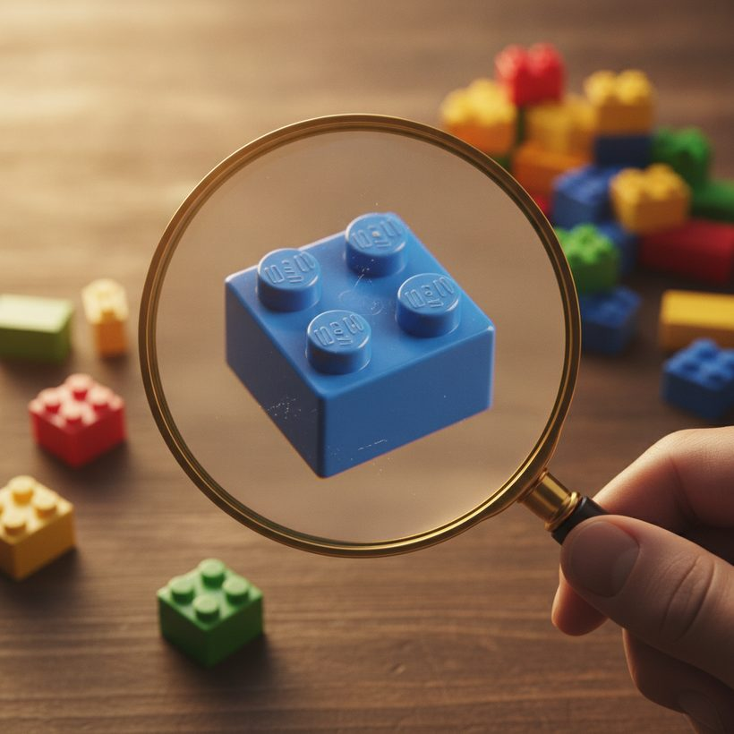
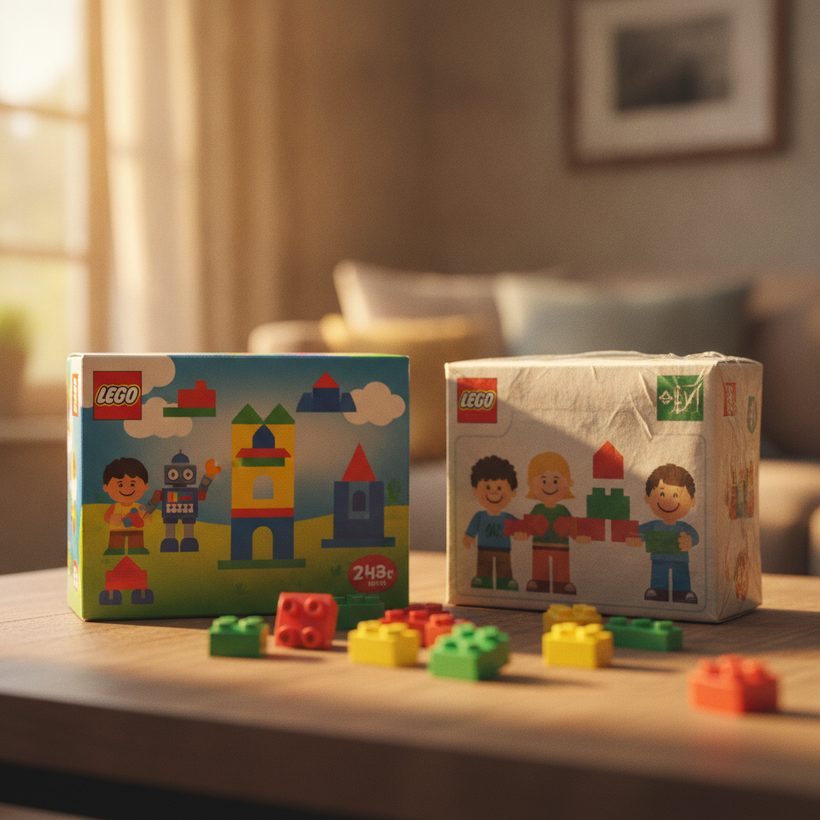

Cómo detectar un set LEGO falso o falsificado
Las marcas clon copian LEGO de cerca, pero las pistas son legibles. Aquí tienes cómo comprobar la impresión de la caja, la calidad de las piezas, el agarre y los studs antes de comprar.
Ranking · 2026Aprender cómo detectar LEGO falso importa más que nunca. A medida que los sets retirados suben de valor, los falsificadores y fabricantes de marcas clon han mejorado en copiar cajas, piezas e incluso minifiguras auténticas. Algunas imitaciones son marcas clon legales vendidas bajo su propio nombre; otras son falsificaciones descaradas que imprimen el logo de LEGO y suplantan sets reales para engañar a los compradores. Ambas pueden dejarte con una construcción que se siente mal, se decolora con el tiempo o vale una fracción de lo que pagaste.
La buena noticia: las falsificaciones casi siempre se delatan a través de un puñado de pistas físicas y de embalaje. Repasa las comprobaciones siguientes antes de entregar tu dinero, sobre todo en sets de mayor valor o supuestamente sellados. Ninguna de estas comprobaciones requiere equipamiento especial, solo tus ojos, tus manos y un poco de paciencia.
Marcas clon frente a falsificaciones: conoce la diferencia
Antes de inspeccionar nada, conviene entender con qué puedes estar tratando, porque no toda pieza que no sea LEGO es un timo. Existen dos categorías muy distintas, y confundirlas lleva a reaccionar de más o a que te timen.
Las marcas clon son empresas que fabrican piezas compatibles con LEGO y las venden abiertamente bajo sus propias marcas. Son productos legales. Algunas están orientadas a constructores con presupuesto ajustado; otras cubren temas de nicho que LEGO nunca ha producido. Comprar una marca clon conscientemente, a precio de marca clon, es una elección perfectamente razonable; el problema solo surge cuando un vendedor reempaqueta o reetiqueta esas piezas y las hace pasar por LEGO auténtico.
Las falsificaciones, en cambio, son ilegales. Copian el logo de LEGO, imitan números de set y artes de caja reales, y están diseñadas específicamente para engañar. Una falsificación de un edificio modular retirado o de un gran set con licencia está diseñada para parecer idéntica en la foto de un anuncio. Aquí es donde los coleccionistas e inversores pierden más dinero, porque el engaño apunta exactamente a los sets que la gente espera conservar o que suban de valor. Tener clara esta distinción te dice lo que significa una pista concreta: un nombre de marca moldeado en un stud es una clon, mientras que un logotipo LEGO borroso en una caja que dice ser un set oficial es una falsificación.
¿No sabes cuánto vale tu set? Compara las mejores herramientas gratis →Pistas en la impresión de la caja y el embalaje
Empieza por la caja, porque los falsificadores recortan gastos en calidad de impresión. El embalaje auténtico de LEGO usa una impresión nítida y de alta resolución, con colores precisos y texto definido. Las falsificaciones a menudo muestran imágenes borrosas, tonos de color ligeramente desviados, negros apagados o tipografías que no coinciden del todo con la fuente oficial de LEGO.
- Comprobación del logo: el logo real de LEGO tiene proporciones consistentes y letras redondeadas. Un espaciado distorsionado o un tono de rojo ligeramente equivocado es una señal de alerta.
- Calidad del texto: busca faltas de ortografía, gramática torpe o marcas de seguridad y de edad ausentes.
- Número del set: confirma que el número y el nombre del set impresos corresponden realmente a un set publicado en una base de datos de catálogo.
- Sellos y solapas: los sets auténticos usan sellos de fábrica limpios o cajas con lengüetas sin manchas de pegamento; una cinta descuidada o solapas repegadas sugieren manipulación o falsificación.
- Código de barras y marcas de país: las cajas oficiales llevan un código de barras escaneable y un etiquetado regional consistente. Un código de barras desajustado o colocado de forma extraña, o una dirección del fabricante ausente, merece un vistazo más atento.
El grosor del cartón es otro indicio sutil. Las cajas auténticas utilizan un cartón resistente y bien cortado con pliegues limpios. Las cajas falsificadas suelen sentirse endebles, tienen bordes irregulares o muestran paneles ligeramente combados por materiales de menor calidad.
Ver el ranking →
Calidad de las piezas y clutch power
Nada delata una falsificación más rápido que manipular las piezas. El LEGO auténtico usa plástico ABS con control estricto, un acabado liso y ligeramente brillante y sin rebabas de molde visibles. Las piezas falsificadas suelen sentirse más ligeras, baratas o grasientas, y pueden desprender un leve olor químico al sacarlas de la bolsa.
La prueba física más fiable es el clutch power (agarre), es decir, la firmeza con que las piezas se sujetan al conectarse. El LEGO real encaja con un agarre satisfactorio y consistente y se libera con limpieza. Las falsificaciones tienden a ser demasiado sueltas (las piezas se caen) o demasiado apretadas (se atascan y dejan marcas de tensión). El color inconsistente entre piezas que deberían coincidir, el alabeo y las partes superiores de los studs que no se alinean sobre una superficie plana son delatores habituales de las marcas clon.
La consistencia del color merece comprobarse en todo el set, no solo en una pieza. LEGO controla sus lotes de color de forma estricta, por lo que dos ladrillos rojos 2x4 de la misma caja deben ser indistinguibles. Las falsificaciones muestran con frecuencia pequeñas diferencias de tono entre piezas que deberían coincidir, especialmente en blancos, grises y azules oscuros, una discrepancia que a menudo se aprecia simplemente colocando piezas similares una al lado de la otra bajo luz natural.
Logos en los studs y marcas de moldeo
Una de las comprobaciones más definitivas está oculta a plena vista: el LEGO auténtico estampa la palabra LEGO en la parte superior de casi cada stud. Coge una pieza y mira de cerca. Los studs auténticos llevan letras limpias y grabadas de forma uniforme. Las piezas clon y falsificadas dejan los studs en blanco, usan otro nombre de marca o reproducen la palabra LEGO con un texto difuso, irregular o desalineado.
Dale la vuelta a las piezas también. LEGO incluye pequeños identificadores de molde y cavidad dentro de muchos elementos, y las superficies interiores son limpias y precisas. Las costuras ásperas, el exceso de plástico o las marcas de hundimiento en la superficie apuntan a un moldeo de menor calidad que no encontrarás en el producto real. Los puntos de inyección, ese pequeño punto elevado donde el plástico entró en el molde, son limpios y consistentes en las piezas auténticas, pero están desordenados o sobredimensionados en muchas falsificaciones. Bajo una luz intensa, inclina una pieza transparente: los elementos transparentes del LEGO auténtico son de una claridad cristalina, mientras que las falsificaciones a menudo parecen turbias, teñidas o llenas de pequeñas burbujas.
Ver el rankingDescubre cuánto valen de verdad tus sets — compara el top 6, gratis.Ver el ranking →Instrucciones y minifiguras
Los folletos de instrucciones auténticos se imprimen en papel de calidad con pasos claros y correctamente numerados y referencias de piezas precisas. Páginas con aspecto de fotocopia, diagramas de baja resolución o un código QR en lugar de un folleto impreso en un set que debería incluirlo son señales de alarma. Las minifiguras merecen su propio escrutinio: las minifigs reales tienen impresión nítida, articulaciones firmes y el nombre LEGO moldeado en la parte trasera del torso, las manos o las piernas. La impresión de la cara emborronada, las extremidades sueltas o la marca ausente suelen indicar una falsificación.
El embolsado es una pista de apoyo. Los sets modernos de LEGO clasifican las piezas en bolsas numeradas con una impresión limpia y consistente. Un set que debería tener bolsas numeradas pero llega con bolsas sin marcar, sin numerar o con cierre irregular merece cuestionarse, sobre todo si se vende como nuevo y sellado. Las hojas de pegatinas son otro punto de control: las hojas auténticas están impresas con nitidez sobre un soporte de calidad, mientras que las pegatinas falsificadas a menudo parecen pixeladas, mal registradas o se despegan de forma irregular.
Ver el ranking →
Dónde aparecen las falsificaciones y cómo comprar con seguridad
Las falsificaciones se concentran en lugares predecibles: mercados abiertos sin autenticación, anuncios de terceros en grandes plataformas, vendedores extranjeros desconocidos y ofertas en redes sociales que parecen extraordinarias. Las marcas clon también se venden abiertamente bajo su propio nombre, lo cual es legal; el problema es cuando un vendedor las hace pasar por LEGO auténtico. Los mercadillos físicos, puestos ambulantes y tiendas en línea no oficiales que usan imágenes de LEGO son otros puntos calientes habituales.
Para comprar con seguridad, prioriza vendedores con buen historial y políticas de devolución claras, pide fotos de cerca de los studs y los sellos de la caja, y desconfía de los sets "sellados" de alto valor que venden cuentas recién creadas. Pagar a través de canales con protección al comprador también importa, para que tengas recurso si el set resulta ser falso. Cuando quieras una referencia objetiva, compara herramientas diseñadas para la autenticidad y la valoración en este ranking de verificadores de valor y autenticidad de LEGO, que te permite contrastar un anuncio con datos de catálogo y el historial real del mercado en lugar de la palabra del vendedor.
Qué hacer si ya has comprado una falsificación
Si un set llega y las pistas apuntan a una falsificación, actúa rápido. Fotografía todo: la caja, los studs, las instrucciones y el embalaje antes de desmontar nada, ya que una evidencia clara refuerza una reclamación. Abre una reclamación de devolución o reembolso en la plataforma de inmediato, citando las pistas concretas que encontraste, y haz referencia a la política de falsificación o de "artículo no según lo descrito" de la plataforma. La mayoría de los grandes mercados dan la razón a los compradores cuando la falsificación está documentada. Guarda el artículo hasta que se resuelva la reclamación y denuncia el anuncio para que el vendedor quede marcado para otros. Si compraste conscientemente una marca clon, no hay nada que reclamar; el problema solo existe cuando te dijeron que era LEGO auténtico.
Precios demasiado buenos para ser verdad
Un precio sospechosamente bajo es en sí mismo una pista. Los sets falsificados y clon rebajan los precios de mercado auténticos porque su producción cuesta poco, así que un set retirado o exclusivo anunciado muy por debajo de su rango típico debería levantar sospechas de inmediato. La defensa es saber por cuánto se vende realmente una copia auténtica. Nuestra opción para esto es BrickGains, que te permite verificar un set frente a datos reales de ventas del mercado para que veas si un precio es plausible o un cebo. Si prefieres comparar varias opciones una al lado de otra, la comparación de herramientas de valoración y verificación cubre las principales y dónde encaja cada una. Trata cualquier oferta muy fuera del rango normal como culpable hasta que se demuestre auténtica, y piensa en rangos, ya que el estado y la completitud también hacen variar los precios legítimos.
Ver el ranking 2026 de las mejores herramientas de valor LEGO
Descubre cuánto valen de verdad tus sets — compara el top 6, gratis.
Ver el rankingPreguntas frecuentes
¿Cuál es la forma más fácil de saber si un LEGO es falso?
Revisa los studs. El LEGO auténtico estampa la palabra LEGO en la parte superior de casi cada stud con letras limpias y uniformes. Studs en blanco, otro nombre de marca o un texto difuso y desalineado casi siempre indican un clon o una falsificación. Combínalo con una prueba de clutch power: las piezas reales encajan con firmeza y se liberan con limpieza.
¿Las marcas clon son lo mismo que el LEGO falsificado?
No exactamente. Las marcas clon venden piezas compatibles legalmente bajo su propio nombre, y comprarlas a sabiendas está bien. Las falsificaciones copian ilegalmente el logo de LEGO y suplantan sets reales para engañar a los compradores. El problema es cuando un vendedor hace pasar cualquiera de los dos tipos por LEGO auténtico a precios de LEGO auténtico.
¿Los sets LEGO falsos pueden dañar a los auténticos?
Pueden causar problemas. Las piezas clon a menudo se moldean con tolerancias ligeramente distintas, así que mezclarlas puede producir conexiones sueltas o demasiado apretadas, y el plástico de menor calidad puede decolorarse o alabearse con el tiempo. Para sets de colección o inversión, mantenlos totalmente auténticos para proteger tanto la calidad de la construcción como el valor de reventa.
¿Cómo sé si el precio de un anuncio significa que el set es falso?
Compáralo con lo que realmente se venden las copias auténticas. Las falsificaciones y clones cuestan poco de fabricar, así que un set retirado o exclusivo con un precio muy por debajo de su rango normal es una señal de alerta. Usa una herramienta como BrickGains para contrastar un set con datos reales de ventas antes de comprar, y trata con sospecha las ofertas muy fuera del rango típico.
¿Qué debo hacer si ya he comprado un set LEGO falsificado?
Fotografía la caja, los studs, las instrucciones y el embalaje antes de desmontar nada, y abre una reclamación de reembolso o de "artículo no según lo descrito" en la plataforma citando las pistas concretas que encontraste. Guarda el artículo hasta que se resuelva la disputa y denuncia el anuncio. La mayoría de los grandes mercados reembolsan a los compradores cuando la falsificación está claramente documentada.